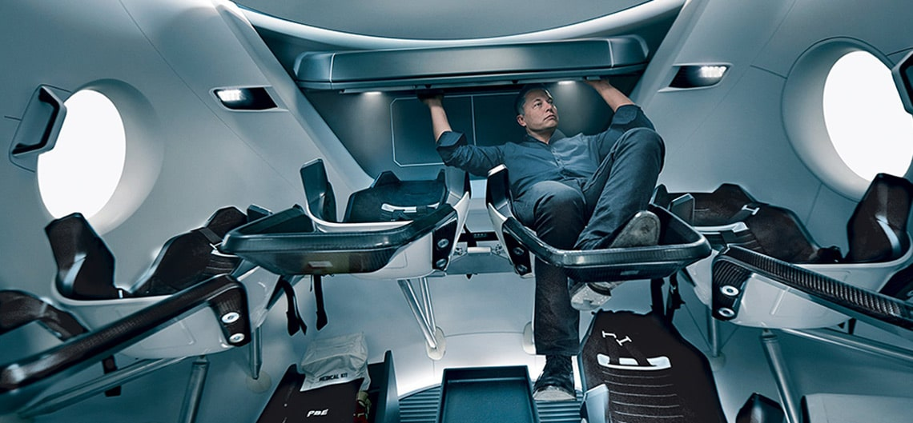

<!DOCTYPE html>
<html lang="ru">
<head>
    <meta charset="UTF-8">
    <meta name="viewport" content="width=device-width, initial-scale=1.0">
    <link rel="apple-touch-icon" sizes="180x180" href="images/Favicon/apple-touch-icon.png">
    <link rel="icon" type="image/png" sizes="32x32" href="images/Favicon/favicon-32x32.png">
    <link rel="icon" type="image/png" sizes="16x16" href="images/Favicon/favicon-16x16.png">
    <link rel="manifest" href="images/Favicon/site.webmanifest">
    <link rel="mask-icon" href="images/Favicon/safari-pinned-tab.svg" color="#5bbad5">
    <link rel="shortcut icon" href="images/Favicon/favicon.ico">
    <meta name="msapplication-TileColor" content="#da532c">
    <meta name="msapplication-config" content="images/Favicon/browserconfig.xml">
    <meta name="theme-color" content="#ffffff">
    <link rel="stylesheet" type="text/css" href="./styles/normalize.css">
    <link rel="stylesheet" type="text/css" href="./styles/style.css">
    <title>Pantheon Project</title>
</head>
<body>
    <header class="header" id="HeaderLink">
        <div class="header__wrap">
            <div class="header__flex">
                <a href="#"></a>
                <nav class="header__flex-nav">
                    <a href="#MarsPath" class="js-scroll">Путь</a>
                    <a href="#Idea" class="js-scroll">Идея проекта</a>
                    <a href="#Price" class="js-scroll">Стоимость</a>
                    <a href="#SoHard" class="js-scroll">Сложности</a>
                    <a href="#HowToLive" class="js-scroll">Как там жить</a>
                    <a href="#LetsGo" class="js-scroll">Летим</a>
                </nav>
            </div>
            
                <div class="header__wrap-text">
                    <p>Пункт назначения:<span>  Пантеон,</span></p>
                    <p>Марс</p>
                </div>
            <div class="header__wrap_text-column">
                <p>Пантеон</p>
                <p>Олимп</p>
            </div>
            <iframe width="510" height="275" src="https://www.youtube.com/embed/w6nUVp9mQDs?controls=0" frameborder="0" allow="accelerometer; autoplay; encrypted-media; gyroscope; picture-in-picture" allowfullscreen class="header__video"></iframe>
            <p class="header__video-desc">&#10235; Как Илон Маск собирается заселять планету Марс</p>
        </div>
        <div class="header__image"></div>
    </header>
    <main>
        <section class="main__about-mars">
            <div class="about__flex">
            <div class="about__block">
                <p class="about__block-value">4</p>
                <p class="about__block-text">четвёртая планета по удалённости от Солнца</p>
            </div>
            <div class="about__block">
                <p class="about__block-value">7</p>
                <p class="about__block-text">седьмая по размерам планета Солнечной системы</p>
            </div>
            <div class="about__block">
                <p class="about__block-value">10,7%</p>
                <p class="about__block-text">массы Земли (ваш вес будет в 3 раза меньше, чем на Земле)</p>
            </div>
            <div class="about__block">
                <p class="about__block-value">2</p>
                <p class="about__block-text">спутника вместо Луны</p>
            </div>
            <div class="about__block">
                <p class="about__block-value">21 км</p>
                <p class="about__block-text">высота самой высокой горы Марса</p>
            </div>
            <div class="about__block about__block-last">
                <p class="about__block-value">+20</p>
                <p class="about__block-text">максимальная температура на поверхности</p>
            </div>
            </div>
        </section>
        <section class="main__path" id="MarsPath">
            <h1>Марс. Вспомнить всё</h1>
            <div class="path__flex">
                <div class="path__flex-text">
                    <p class="path__flex_text-title">Что такое Марс?</p>
                    <p>Планета Солнечной системы, названа в честь Марса — древнеримского бога войны. Иногда Марс называют «красной планетой» из-за красного оттенка поверхности, придаваемого ей оксидом железа.</p>
                    <p>Особенности планеты — наличие слабой атмосферы, состоящей в основном из углекислого газа, времена года, пылевые бури, сильная эрозия почв.</p>
                    <p class="path__flex_text-title">Где это? Как туда доехать?</p>
                    <p>Расстояние до Марса — почти 56 миллионов километров. Чтобы преодолеть такое расстояние, нужно лететь на межпланетоном корабле 7-8 месяцев.</p>
                </div>
                
            </div>
        </section>
        <section class="main__mask" id="Idea">
            <h2>От идеи до реализации</h2>
            <div class="main__mask-flex">
                <div class="mask__flex-text">
                    <p class="mask__flex-title">Илон Маск. Гений или безумец?</p>
                    <p>Канадско-американский инженер, предприниматель, изобретатель и инвестор; миллиардер. Основатель компаний SpaceX и X.com, позже переименованной в PayPal. Планирует потратить большую часть накоплений на реализацию своей мечты, а также мечты многих тысяч романтиков, писателей, учёных: создать внеземную цивилизацию.</p>
                    <blockquote>Мы должны сделать эту мечту реальностью за наше время жизни. Любой человек,
                        который пожелает отправиться на Марс, должен иметь такую возможность</blockquote>
                    <p class="mask__flex_text-margin"> — заявил Маск на Международной астронавтической конференции в Гвадалахаре (Мексика). Он обосновал необходимость своего проекта вопросом выживания человечества, которое для своего сохранения должно стать «космическим видом».</p>
                    <p>Илон поставил перед собой цель: сократить стоимость вывода кораблей в космос в 10 раз, что станет первым шагом для человечества в освоении Марса.</p>
                </div>
                
                <div class="border"></div>
            </div>
        </section>
        <section class="main__price">
            <div class="main__price-bg"></div>
                <div class="main__price-flex">
                
                <div class="main__price-text" id="Price">
                    <h3>Стоимость перелёта</h3>
                    <p>Высадка двоих астронавтов на Луну обошлась США в 20 млрд. долларов. Маск стремится сократить эту цифру в 20 000 раз, что составит 500 000 долларов на человека.</p>
                    <p class="main__price_flex-string"><span class="price__text-cost">$500 К</span><span class="price__text-where"> и ты на Марсе!</span><a href="#" class="main__price-button"> Я готов лететь</a></p>
                </div>
            </div>
        </section>
        <section class="main__life">
            <div class="main__life-wrap" id="SoHard">
                <h3>Подводные камни в масштабах космоса</h3>
                <iframe class="iframe__life" src="https://www.youtube.com/embed/D0VFPAZ50Yk?controls=0" frameborder="0" allow="accelerometer; autoplay; encrypted-media; gyroscope; picture-in-picture" allowfullscreen></iframe>
                <div class="main__life-text">
                    <p>Жить или выживать?</p>
                    <p>Чем отличаются Земля и Марс? Какие условия встретят новых поселенцев?</p>
                    <p>Марс холодная и засушливая планета, на которой есть своя атмосфера, на 96% состоящая из углекислых газов, а минимальная температура опускается до -140 градусов по Цельсию. Каждый годпо весне на планете случаются пылевые бури, длящиеся от нескольких часов до нескольких месяцев.</p>
                    <p>На планете отсутствует магнитное поле, поэтому радиационный фон повышен. А низкая гравитация при длительном пребывании на Марсе сделает возвращение на Землю невозможным. Полёт на Марс — билет в один конец с целью создать новую цивилизацию.</p>
                </div>
            </div>
        </section>
         <section class="main__colony">
            <div class="colony__wrap" id="HowToLive">
                <h3>Организация жизни в колонии</h3>
                
                <p>В основе жилых помещений лежат надувные компоненты — спальня, рабочая зона, гостиная, парник для выращивания зелени — 50 м2 на человека. Благодаря этим компонентам, колонисты смогут принять душ, приготовить свежую пищу, носить обычную одежду. Весь комплекс соединен сетью ходов.</p>
                <a href="#" class="colony__wrap-button">Подробнее</a>
            </div>
         </section>

         <section class="main__request">
            <div class="main__request-wrap" id="LetsGo">
                <h3>Деньги приготовил. Когда вылетаем?</h3>
                <div class="request__flex">
                    <form class="request__form">
                            <div class="request__form-p">
                                <p>Будь в курсе новостей</p>
                                <input type="text" class="request__form-field" placeholder="Имя">
                                <input type="text" class="request__form-field" placeholder="E-mail">
                                <button type="submit" class="request__form-button">Подписаться</button>
                            </div>
                    </form>
                    <div class="request__text">
                        <p>Первый «частный» полёт на Марс осуществит в 2018 году в беспилотном варианте корабль Dragon V2 с помощью тяжёлой ракеты Falcon Heavy. После этого запланированы две миссии в 2020 году, как минимум одна в 2022-м и, вероятно, пилотируемая миссия через два года с достижением Марса в 2025 году.</p>
                        <p>Для всех желающих открыты курсы подготовки.</p>
                        <a href="#">Критерии отбора</a>
                    </div>
                </div>
            </div>
    <footer class="footer">
        <div class="footer__flex">
            <a href="#"></a>
            <a href="#HeaderLink" class="footer__link js-scroll">К началу &uarr;</a>
            <div class="footer__social">
                <p>
                    <a href="#"></a>
                    <a href="#"></a>
                    <a href="#"></a>
                    <a href="#"></a>
                </p>
            </div>
        </div>
    </footer>
</section>
</main>
    <script src="./js/js.js"></script>
</body>
</html>